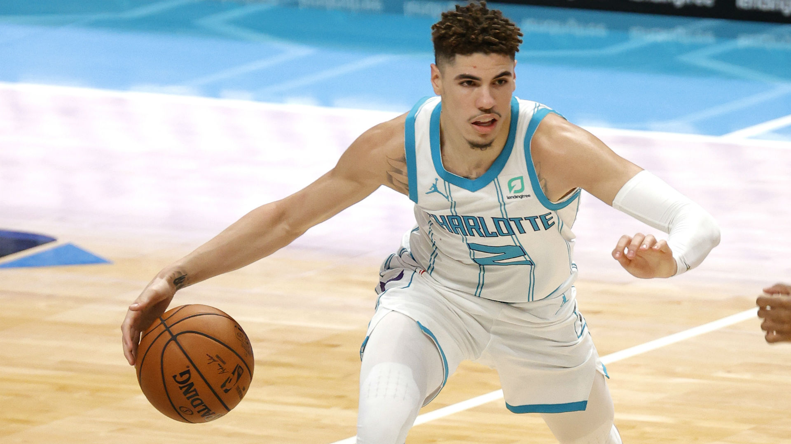

NBA Rookie of The Year Odds
- 
[February 1] Immanuel Quickley stayed hot on Sunday, dropping 25 points in a close loss to the Clippers. A key part of Tom Thibodeau’s rotation, Quickley’s odds have improved to +850 on average, while he’s been as long as +6250
[January 27] Wiseman has seen his average odds go back to improving, now at a price of +750
[January 20] Tyrese Haliburton has asserted himself as LaMelo Ball’s primary challenger, now at average odds of +325
[January 12] Ball became the youngest player to ever record a triple-double at 19, and the market has shifted in his favor, as he’s now odds-on favorite with an average price of -172 to win ROY
[January 6] LaMelo Ball has edged back ahead of Wiseman in favorite position, while Kings guard Tyrese Haliburton has jumped into the top five, now at average odds of +725
[December 29] With a starting role locked and loaded for the Warriors, James Wiseman has ascended to the +250 favorite to win 2021 ROY
[December 22] On opening night, Anthony Edwards has inched back ahead of Obi Toppin as the second favorite behind Ball, now at average odds of +575
[December 15] After solid preseason showings, LaMelo Ball remains the favorite, while Obi Toppin has surged to second favorite, at average odds +520, shortened from +650
[November 19] LaMelo Ball is likely to have a long leash and a chance to run the Hornets offense, which puts him in pole position as opening favorite. Anthony Edwards goes to Minnesota with odds of +465 and James Wiseman will man the C spot for Golden State at average odds of +540
2021 NBA Rookie of the Year Odds
Player Odds
LaMelo Ball -125
Tyrese Haliburton +390
Immanuel Quickley +700
James Wiseman +750
Anthony Edwards +1300
Cole Anthony +1600
Tyrese Maxey +3600
Payton Pritchard +4600
Deni Avdija +5500
Obi Toppin +6500
Desmond Bane +8500
Source